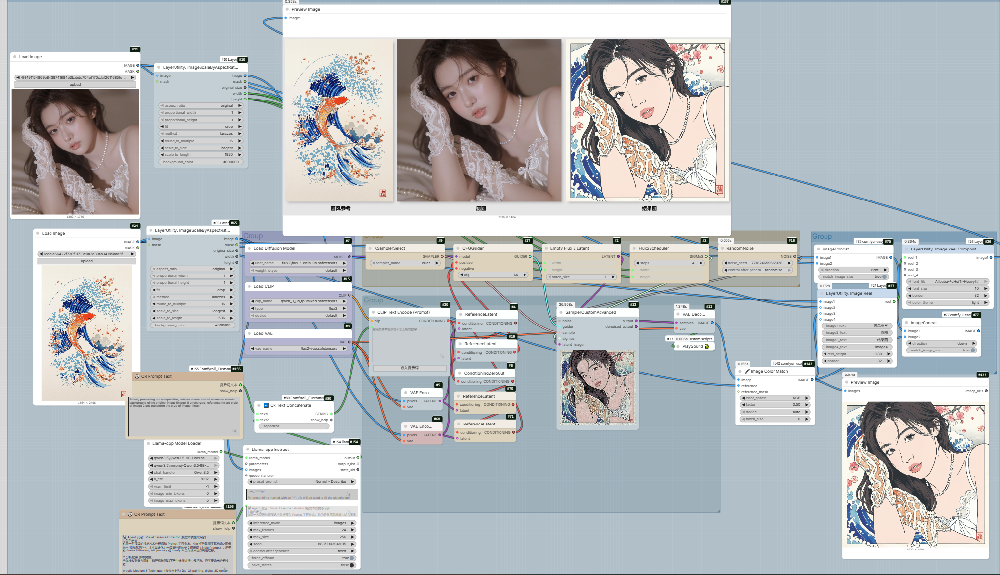

← 返回首页
风格迁移 / Style Transfer
ComfyUI 工作流架构解析

核心技术链路： 本架构以 Flux-2-KLEIN 为视觉底座，其核心在于自主研发的 “视觉基因提取引擎”。
通过 Qwen3.5 对参考图进行五维深度分析（媒介、色彩、光影、纹理、艺术流派），生成高纯度英文提示词。配合 ReferenceLatent 潜空间约束与 ImageColorMatch+ 色彩空间校准，实现了从语义理解到像素生成的全链路闭环，确保原图构图细节与风格注入的深度融合。